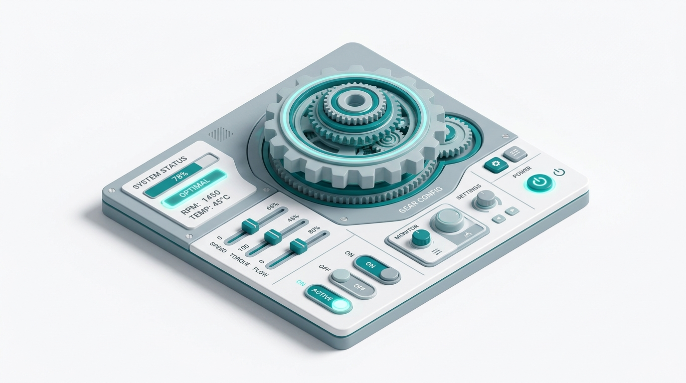

⚙️ Make it yours
Settings
Choose how strict your scans are, set your motion preference, and manage what AccessiCheck remembers on this device.
WCAG Conformance Level WCAG has two main levels: A (minimum) and AA (the standard most laws require, like ADA/EN 301 549). AA is the recommended default and what AccessiCheck uses by default.
Controls which rules axe-core checks on your next scan.
Scan History
No scan history saved yet.